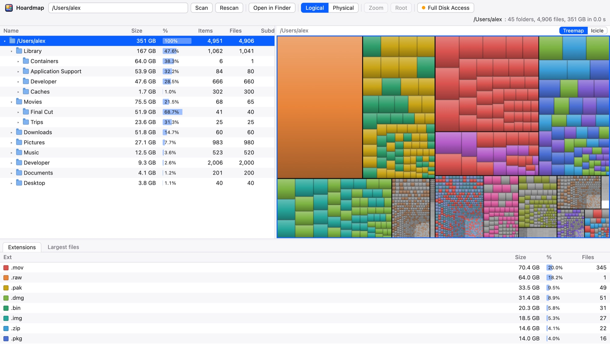
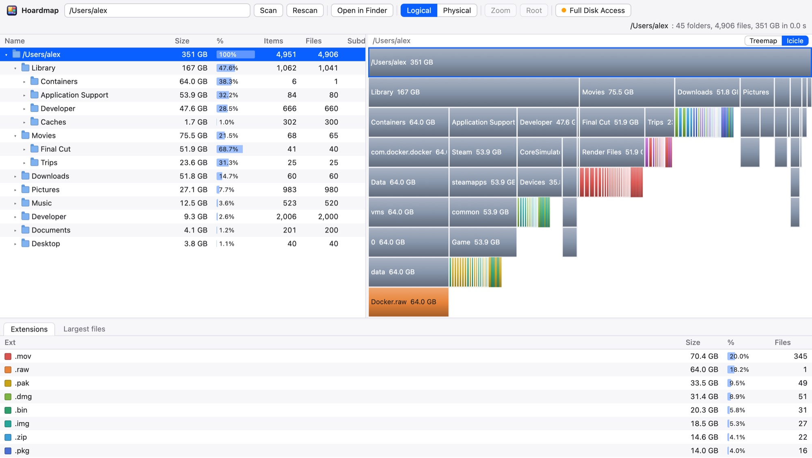

Find what's hoarding your disk.
A fast, free map of your Mac's storage. Every folder and file, sized at a glance. Spot the giant, click it, and Finder takes you straight there.
$ brew install --cask abhishekkundu25/tap/hoardmap
Install with Homebrew: ready to open, and
Or download for MacFree · macOS 11 or later · Apple silicon & Intel
brew upgrade keeps it current.
